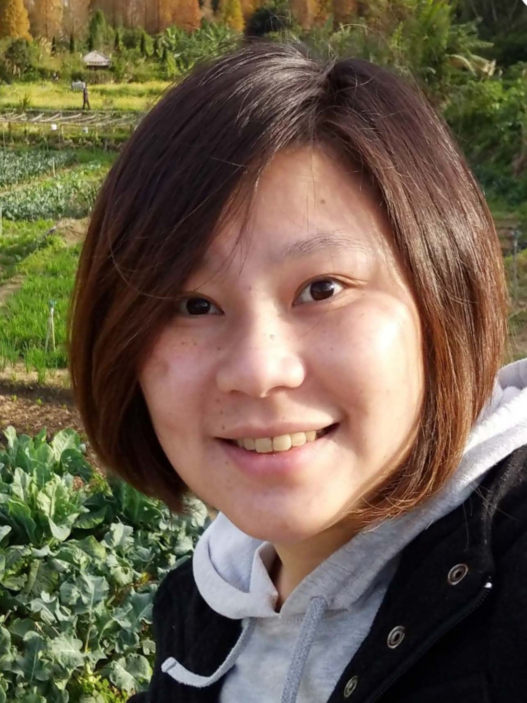
發起與協調
Yun-Cheng (Pecu) Tsai
PecuLab LLC
可協助：學習設計 · 專案範圍梳理 · 合作協調
推進第一個 Taiwan–Seattle 試點，整理可供不同地區共同參與的實作方法。
認識 Pecu →TAIWAN–SEATTLE BRIDGE / 合作網絡
了解網絡中的人物及更廣泛的專業社群。各專案的參與方式與投入時間，將與本人個別確認。
← 回到計畫總覽人才與貢獻
保留已加入這座橋梁的人才網絡，也歡迎更多人協助形成首期試點。每個專案的具體貢獻與投入時間，仍須個別約定。

PecuLab LLC
可協助：學習設計 · 專案範圍梳理 · 合作協調
推進第一個 Taiwan–Seattle 試點，整理可供不同地區共同參與的實作方法。
認識 Pecu →人物卡的學校與公司 logo 用於說明個人隸屬；資源區 logo 用於識別連結來源，均不代表機構贊助、背書或已成立合作關係。下方貢獻方向供討論，並非已確認分工。
OLONS 創辦人
新墨西哥大學計算機工程碩士（2020）
打造 OLONS Proto：AI 顧問一次對談了解你的生意，即時為你建好網站。
可討論的貢獻方向（待本人確認）：商業情境 · AI 產品原型
已列於參與網絡 · 專案角色與投入時間待確認
Refine 創辦人
AI 企業培訓：6 分鐘自適應 AI 情境模擬課程，把公司知識轉化為執行力。
可討論的貢獻方向（待本人確認）：學習設計 · 應用 AI
已列於參與網絡 · 專案角色與投入時間待確認
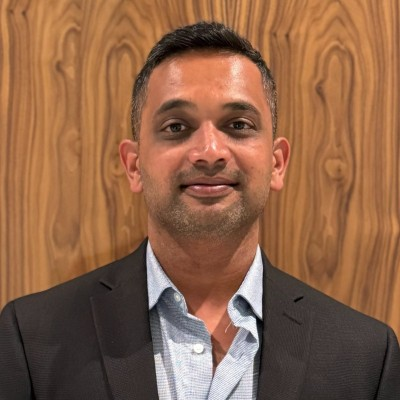
Quantum Ready 創辦人暨執行長
企業 AI 與資料架構
將先進 AI、量子啟發方法與現代資料平台導入實際商業應用。
Quantum Ready ↗LinkedIn ↗可討論的貢獻方向（待本人確認）：企業 AI · 資料架構
已列於參與網絡 · 專案角色與投入時間待確認
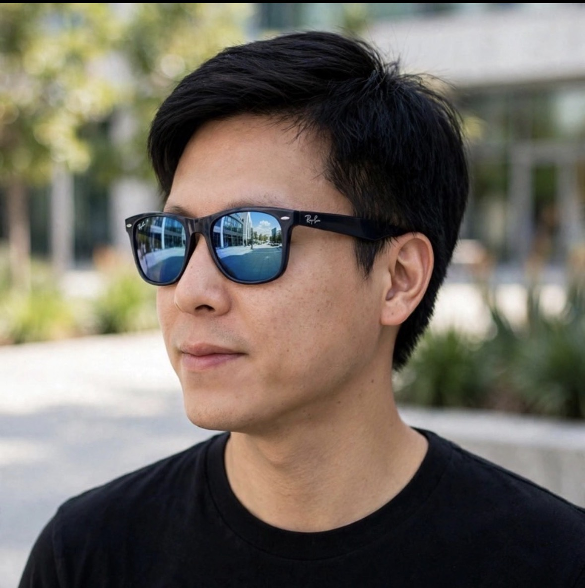
Meta 應用研究科學家
資訊科學博士；國立臺灣大學校友
擁有逾十年電腦視覺、人臉辨識與深度學習經驗，連結學術研究與產業應用。
LinkedIn ↗可討論的貢獻方向（待本人確認）：電腦視覺 · 研究評估
已列於參與網絡 · 專案角色與投入時間待確認
Google 軟體工程師
大西雅圖地區
具華盛頓大學教育背景。
可討論的貢獻方向（待本人確認）：軟體工程 · 技術審閱
已列於參與網絡 · 專案角色與投入時間待確認
ALUVA 創辦人暨執行長
美亞跨境創業、策略與產業 AI
擁有逾 20 年創業與全球專案領導經驗，曾任職微軟，長期往來美國與亞洲。ALUVA 保存資深專家的實務知識，為半導體、國防、航太與先進製造團隊提供附有來源引用的工作指引。
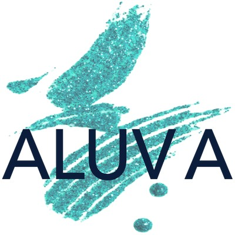
可討論的貢獻方向（待本人確認）：產業情境 · 創業策略
已列於參與網絡 · 專案角色與投入時間待確認
Amazon 企業會計 AI 代理解決方案
AWS Certified AI Practitioner；國立臺灣大學校友
打造企業會計 AI 解決方案，應用於異常偵測、帳務核對與財務結帳流程。結合財務專業、AI 產品策略與治理經驗，推動人與 AI 代理協作。
LinkedIn ↗可討論的貢獻方向（待本人確認）：會計 AI · 評估與治理
已列於參與網絡 · 專案角色與投入時間待確認
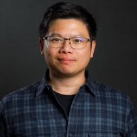
Ownership Code 創辦人
業師暨企業出題者 · 美國麻薩諸塞州 Acton
專長涵蓋企業收購、私募股權、槓桿收購、企業營運擴展與生醫技術商業化。提供 AI 客戶開發與品牌成長的真實商業需求，讓學生從問題定義、原型實作到成果驗證，探索技術如何創造商業價值。
Ownership Code 官網 ↗LinkedIn ↗可討論的貢獻方向（待本人確認）：學生協作 · 專案貢獻
已列於參與網絡 · 專案角色與投入時間待確認
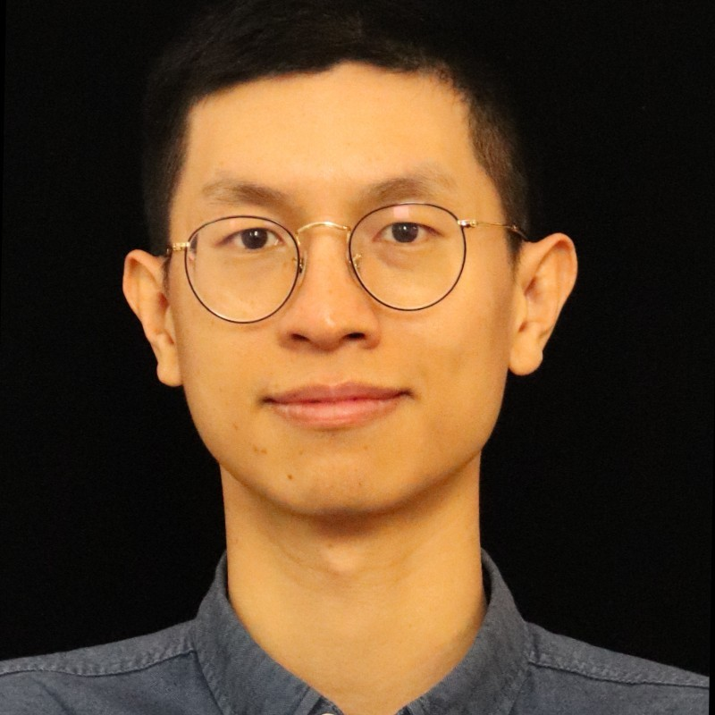
AWS Neuron AI／ML 軟體工程師
美國華盛頓州西雅圖；加州大學聖地牙哥分校校友
專長涵蓋機器學習系統、大型語言模型（LLM）模型服務、機器學習維運（MLOps）、電腦視覺與機器人技術。
可討論的貢獻方向（待本人確認）：機器學習系統 · 原型部署
已列於參與網絡 · 專案角色與投入時間待確認
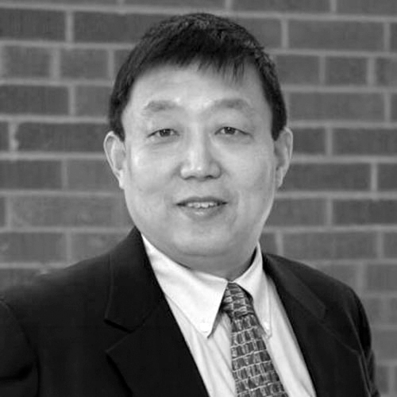
普渡大學韋恩堡分校計算機科學副教授
普渡量子 AI 安全實驗室主任；普渡量子科學與工程研究院成員
量子計算與 AI：量子機器學習、最佳化、資安與負責任的量子技術。MindGPA 創辦人。

可討論的貢獻方向（待本人確認）：AI 研究 · 技術審閱
已列於參與網絡 · 專案角色與投入時間待確認
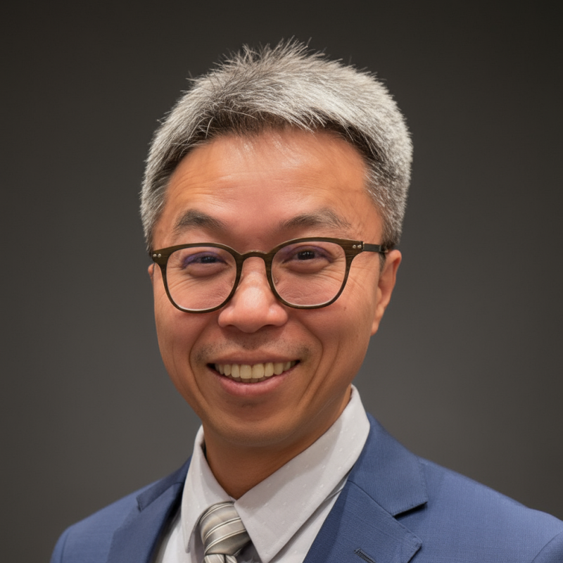
華盛頓大學物理學教授
電機與計算機工程兼任教授；NSF HDR A3D3 研究院院長
實驗粒子物理學家，研究用於數據密集型科學發現的即時 AI。

可討論的貢獻方向（待本人確認）：研究轉原型 · 科學 AI
已列於參與網絡 · 專案角色與投入時間待確認
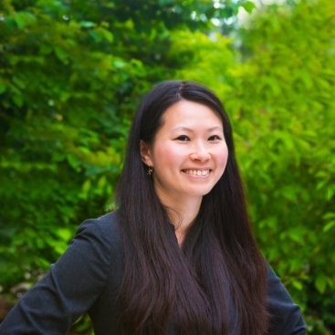
中央華盛頓大學學校心理學系教師
學校心理學家；研究領域包括課堂經營、社會情緒評量與 ADHD。曾在台灣任教，傅爾布萊特獎學金得主。
校方個人介紹 ↗LinkedIn ↗可討論的貢獻方向（待本人確認）：校園串聯 · 學習設計
已列於參與網絡 · 專案角色與投入時間待確認
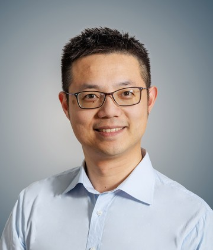
西雅圖大學運動機能學系助理教授
生物力學家（波士頓大學博士），以高精度動作追蹤與醫學影像探索肌肉骨骼疾病療法。於台灣受訓。
校方個人介紹 ↗LinkedIn ↗可討論的貢獻方向（待本人確認）：校園串聯 · 學習設計
已列於參與網絡 · 專案角色與投入時間待確認
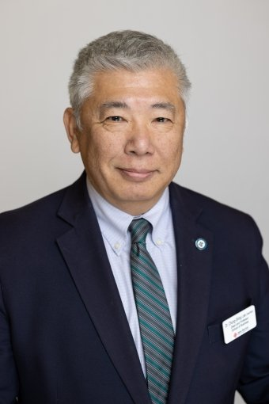
聖馬丁大學商業、工程與科技學院院長
商學教授
喬治華盛頓大學工程與科技管理博士、馬里蘭大學經濟學碩士、國立臺灣大學經濟學學士。
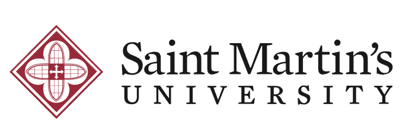
可討論的貢獻方向（待本人確認）：校園串聯 · 學習設計
已列於參與網絡 · 專案角色與投入時間待確認
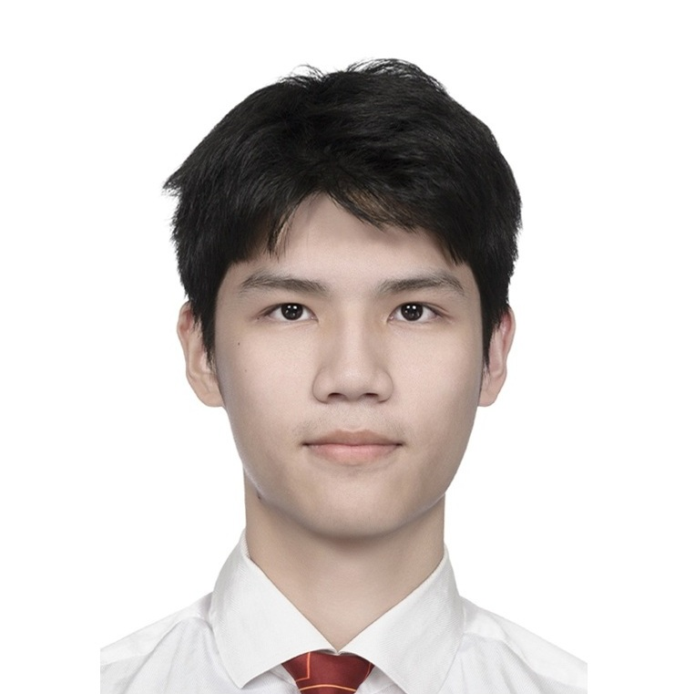
多倫多大學電機系學生
PECULAB LLC 大學部學生研究員
參與量子機器學習研究，比較 QLSTM 與 Recursive QLSTM 在短期溫度預測上的表現，並於 IEEE Quantum Week 2026 發表研究成果。
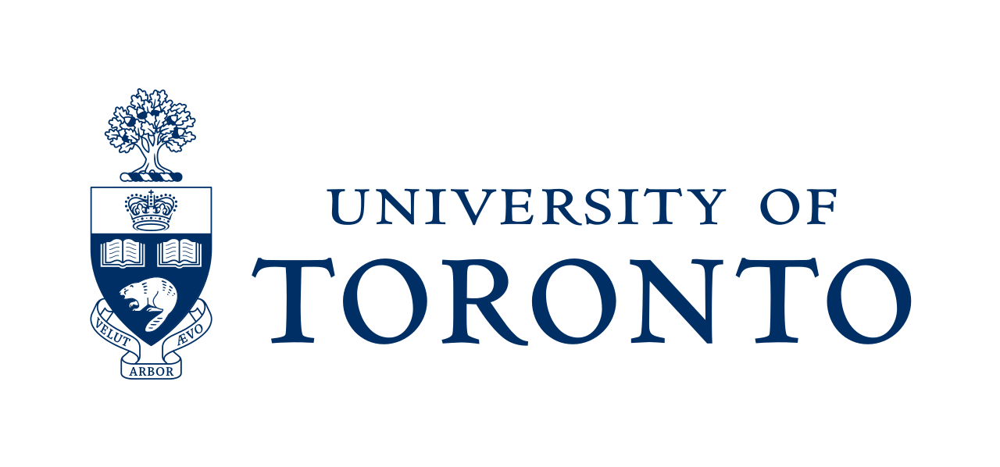
可討論的貢獻方向（待本人確認）：學生協作 · 專案貢獻
已列於參與網絡 · 專案角色與投入時間待確認
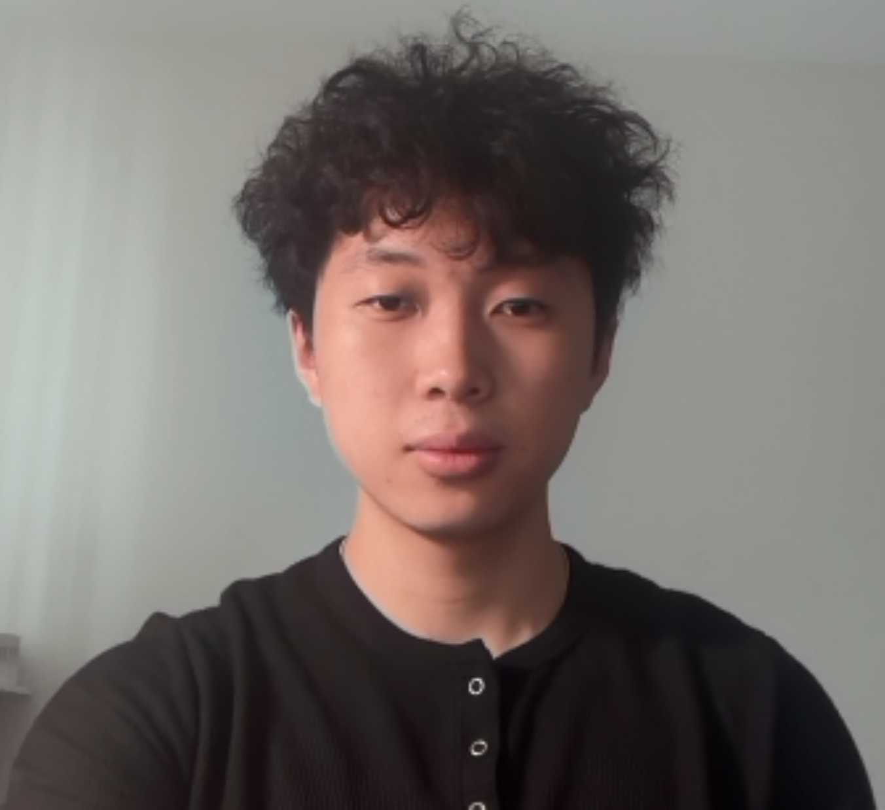
華盛頓大學資訊學（資料科學）學士班學生
輔修商業
專注於資料分析、視覺化與 AI 應用，協助制定更明智的商業與產品決策。
可討論的貢獻方向（待本人確認）：學生協作 · 專案貢獻
已列於參與網絡 · 專案角色與投入時間待確認
華盛頓大學工程學士班學生
台灣學生會平面設計／公關幹部
具備機器人工程與程式設計、健康議題研究及學生社群活動經驗。共同創辦 The Warning Sign，推動校園健康意識。
可討論的貢獻方向（待本人確認）：學生協作 · 專案貢獻
已列於參與網絡 · 專案角色與投入時間待確認
連結更廣的網絡 · 開放共同參與
合作架構討論中
我們正與 NATEA 總會及相關地區社群討論可能的合作架構。正式名稱、角色、參與分會與資源承諾尚未定案；目前 Taiwan–Seattle Bridge 由 PecuLab 發起與協調。
NATEA 官網使命涵蓋科技應用、職涯、創業、青年參與及台灣與北美交流。以下官方連結可幫助你認識更廣泛的社群與資源。
閱讀 NATEA 官方使命認識矽谷分會的官方網站、社群活動與公告。
前往官方資源探索論壇的技術議題、議程與計畫資源。
前往官方資源認識創業交流及 Startup Day 公開活動內容。
前往官方資源由 NATEA 官網整理的科技社群與相關資源入口。
前往官方資源查看官方刊物與文章投稿資訊。
前往官方資源透過 NATEA Seattle 連結的活動主辦頁查看資訊，以主辦單位最新公告為準。
前往官方資源外部資源由各單位獨立營運。Logo 用於識別其權利人，列出資源不代表已宣布與本計畫合作。
交流訪問與後續專案將依範圍、資源及合作對象的確認進度推進。
閱讀交流提案 →